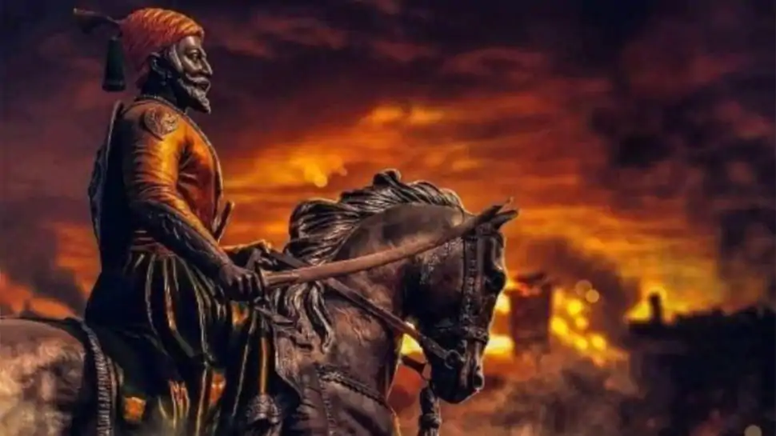
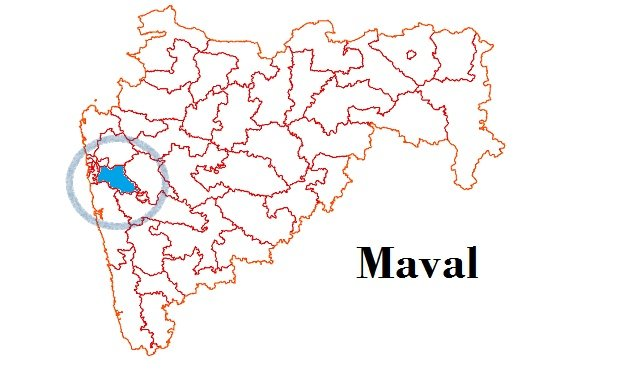
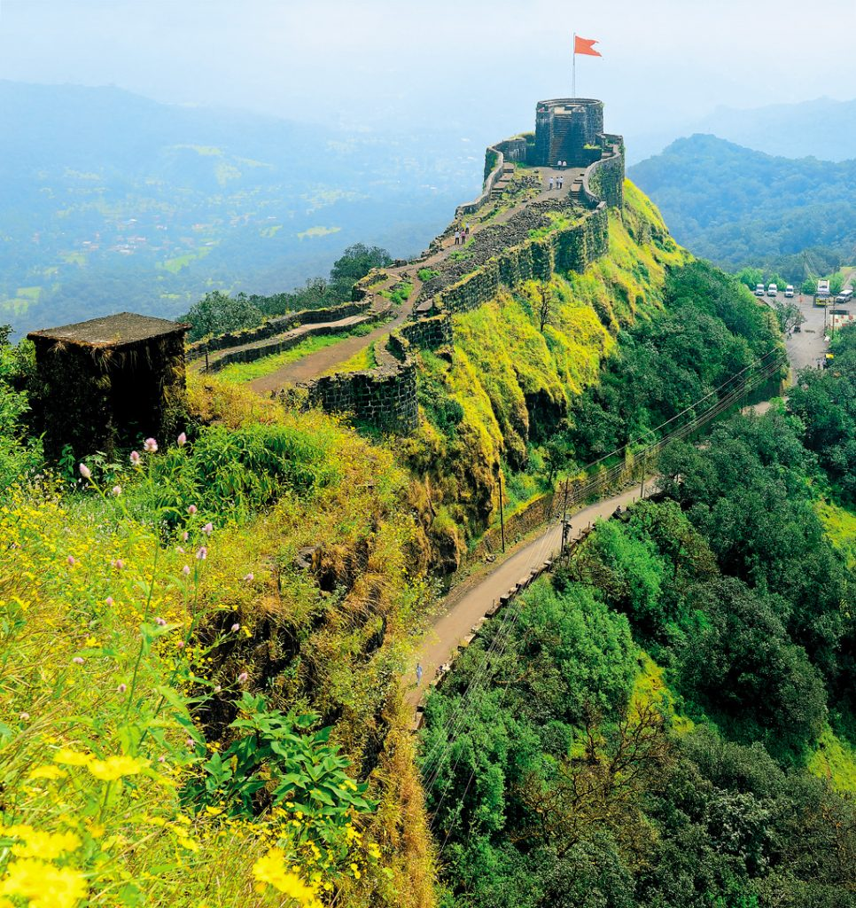
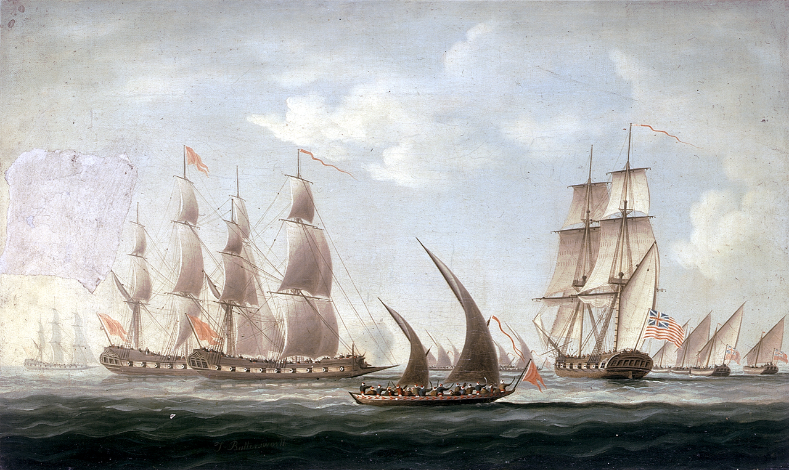
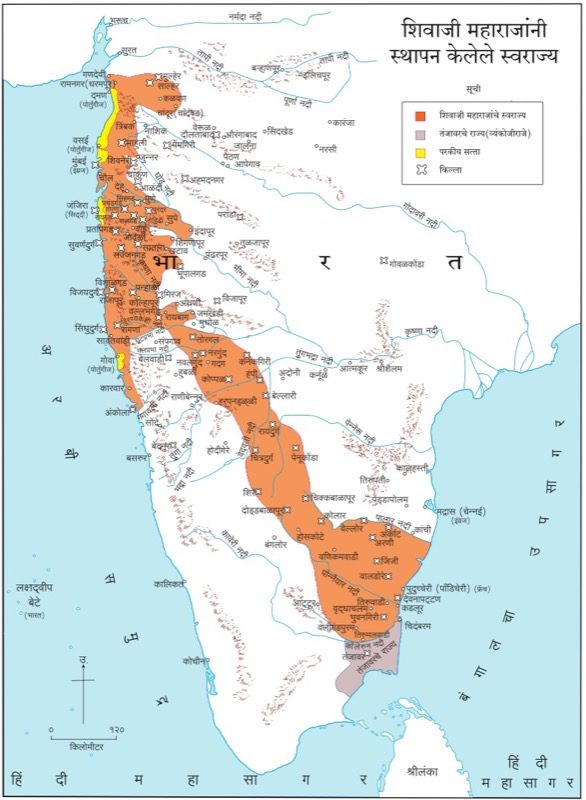

Swaraj:
A brief account of Shivaji Maharaj's life.
Pre Script
The Mumbai International Airport is named after Chhatrapati Shivaji Maharaj, one of the most important historical figures of India. Unfortunately, very little is known to the young generation about the life of this great warrior. Here is my try to give a brief perspective about the early history of his kingdom- the Swaraj. I have collected this information from various books at the local library, alongwith Maharashtra Board's past textbooks; hence I cannot provide any links here.
Birth and Early Life
Shivaji was born to Jijabai and Shahaji, at the Shivneri fort, near Junnar in Maharashtra on 19 February 1630. In the Hindu calender, this date is Phalgun Vaidya Tritiya in the Shaka Year 1551.
The Maval region in Western Maharashtra was the initial workshop of Shivaji Maharaj, from where he started building the Swaraj. The terrain of the Western Ghats is a not-so-easily accesible region. The use of hilly warfare tactics like guerrilla warfare was done extensively in the conquest for Swaraj. The following figure shows the location of Maval region in Maharashtra: it is located between Mumbai and Pune. This region was under the Adil Shah of Bijapur.
Local Opposition to Swaraj
The first thing to be ensured was that the forts in the region- which were of immense strategic importance- should be captured. Shivaji Maharaj's first conquests captured the forts like Torana, Purandar, Murumbdev and Kondhana. The fort of Kondhana was the battlefield in 2020's highest grossing Indian film- Tanhaji: The Unsung Warrior. Thereafter, the fort Murumbdev was repaired and renamed as Rajgad- which was the first Capital of the Swaraj.
India's biggest problem is its own people- they are never united and constantly betray each other, stalling each other's
and hence the country's growth. The same problem was faced by Shivaji Maharaj- various Sardars under the Bijapur Kingdom, like
the Mores of Javali (near Satara) were opposed to the cause of Swaraj, and created hurdles in his conquests against AdilShah.
This region was captured in 1656 AD.
He built the Pratapgad fort in the region, where he attained a significant amount of wealth.

The beautiful fort of Pratapgad, located near Mahabaleshwar.India's First Naval Force
With the victory at Javali, Swaraj expanded into Konkan. Areas like Kalyan and Bhiwandi were annexed into Swaraj. Various western coast powers like Siddi, British and Portuguese were now the new threat to the Swaraj.
To fight these powers, Shivaji Maharaj realized that a strong Naval Force was necessary. He took up the task of constructing multiple naval bases along the coast of Maharashtra. He organized two fleets under different commanders. The Maratha Navy consisted mostly of native Konkani sailors.

The Maratha Navy, by Thomas Buttersworth .By 1659, the Maratha Navy consisted of around 20 warships. The Maratha Navy was the first Navy commanded by a native Indian power. Chhatrapati Shivaji Maharaj is, thus, known as the Father of Modern Indian Navy.
Invasions against the Swaraj
Treachery of AfzalKhan
Under the pretext of talks, a meeting of Afzalkhan, an experienced and strong leader of the Bijapur Kingdom, with Maharaj took place in late 1659. Afzal Khan attempted treachery, by trying to stab Maharaj in the back.Afzal Khan asked Shivaji to submit to the Bijapuri king Adil Shah, and be recognized as a vassal lord. He pretended to embrace Shivaji, but then quickly stabbed him with a concealed weapon. Shivaji, who foresaw this, had taken preventive measures and thus, was protected by his chain mail. As a response to the treachery, Afzalkhan was beheaded by Shivaji Maharaj.
The Siddi of Karnaul
The Adilshah later sent the Siddi of Karnaul against Maharaj, who sieged the Panhala fort where Maharaj was staying. The Seige continued for five months. Shivaji, worried about his subjects being left without their King, tried various futile attempts at defeating Siddi. Finally, he made an unusual plan to escape the seige.He made pretence of submission, and sent message to Siddi Jauhar that he would like to discuss terms of surrender. In the cover of the night, Siddi Jauhar met Maharaj outside the fort, and began their talks. Agreeing to meet again the next day, and finalise terms, Maharaj made his way back to the fort, leaving Siddi Jauhar in a false sense of security and closure. While Siddi Jauhar relaxed and his armies took a much sought break, Maharaj escaped from Panhala.
This escape led to the famous Battle of Pavan Khind.
Defeat of Shaistakhan
While Maharaj was trapped at Panhala, Shaistakhan, a Mughal Sardar had wreaked havoc among the general public. He set up his camp at Lal Mahal in Pune. He didn't budge by himself for two years, and Maharaj had to draw up a novel, bold plan to defeat him.A wedding party had obtained special permission from Shaistakhan for holding a procession. Maharaj and many of his nearly 400 men disguised as the bridegroom's procession members entered Pune. After midnight, they raided the Nawab's compound and then entered the palace in an attempt to assassinate him. Shaistakhan was unaware and unprepared. The Marathas broke into the courtyard of the palace and slaughtered the palace guards. Shaistakhan lost three fingers in a skirmish with Shivaji. He suffered great humiliation and left Pune.
Shivaji Maharaj's further challenges include The Surat Campaign, Jaisingh's invasion, Treachery at Agra, Escape from Agra and many more.
The orange region in the following image shows the Maratha Empire under Shivaji Maharaj:  The Maratha Warriors later expanded this empire to cover most of Modern-day India, ending the Mughal supremacy over the land.Post Script
Shivaji Maharaj's life was extra-ordinary, filled with constant struggles, and devoted to the welfare of his subjects.This or any write-up cannot give justice to his efforts.
I salute the warrior and end this blog here.
Thank you for reading!